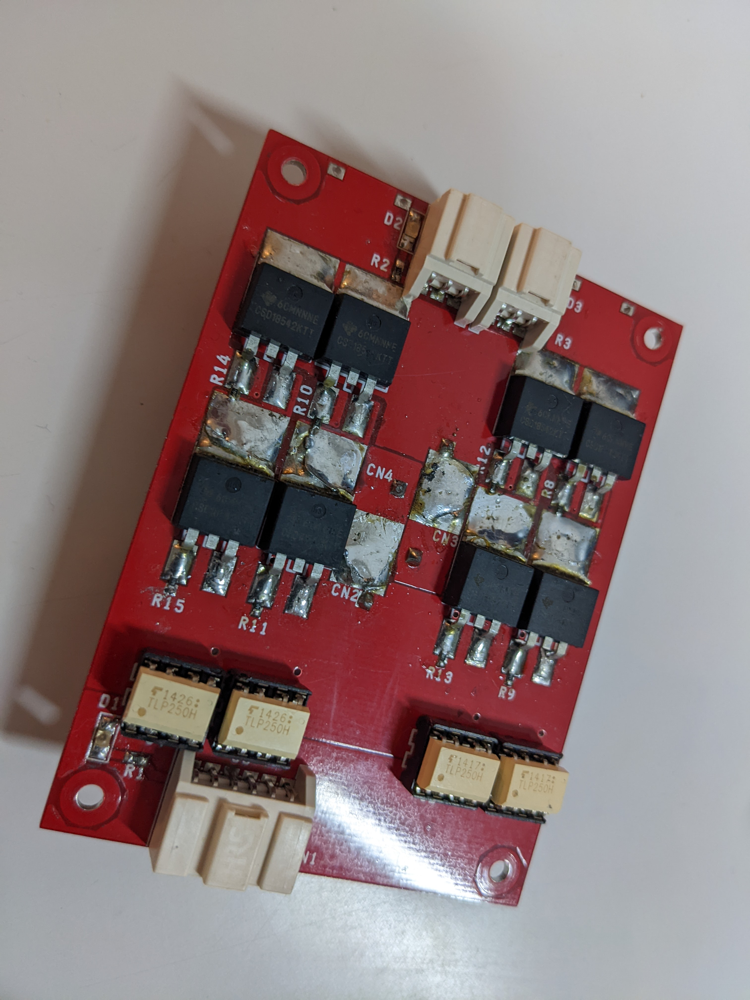

ロボコンサークルでは12V電源で動くモータドライバが使用されていました。
ですが、NHKロボコンを見に行った際に他大学との移動速度差にショックを受けて、ルール上最大電圧である24Vのモータドライバを開発しようと決めました。
また、電源が分離されておらずモータに大電流を流したときにマイコンの誤作動が起こることがあったので、フォトカプラ or ドライバICで電源も分離しました。
試作24Vモータドライバ


フォトカプラで電源を分離したモータドライバです。従来作られていた12Vモータドライバの回路の読み解き、24V耐圧の部品の選定をして試作して完成したモータドライバです。
FETのショートや、サージ電圧による部品破壊など構想から半年ほどかかりました。
ゲートドライバ電源分離型モータドライバ

フォトカプラで電源を分離すると基板のサイズが大きくなったので、ゲートドライバICに絶縁機能があるSi82394を選択して作成しました。
ゲートドライバのリファレンスマニュアルを読みながら、IC・FETのデットタイムを詰めて作成しました。
川ロボ用絶縁モータドライバ
社会人になって川崎ロボコンに出るように作成したモータドライバです。
川ロボの重量制限が厳しかったので、「コンパクト」＋「電源を分離」させることを意識しました。